他叫阿明。2000 年出生在叙利亚阿勒颇。他爸爸是小学老师，妈妈在市场卖布。他的人生，和在座各位一样，应该简单而幸福。
阿明记得面包的气味。
不是超市里用塑料袋装着的那种。是阿勒颇老城巷口哈桑叔叔的面包炉——一个用砖头砌的半圆形灶，底下烧着橄榄木，面团贴在炉壁上，烤到鼓起来、表皮发焦的时候，整条巷子都是面粉和炭火混在一起的香味。阿明每天放学都要绕到巷口，用妈妈给的 10 叙利亚镑买一个刚出炉的饼。他一边走一边撕着吃，烫嘴，但舍不得停。
2000 年，阿明出生在这条巷子尽头的一栋三层小楼里。爸爸法赫德是小学老师，教阿拉伯语和历史，月薪大约 200 美元。在阿勒颇，这算体面的中产。妈妈纳迪娅在巴扎里有一个小布摊，卖窗帘布和床单。她不是因为穷才去卖布——用她的话说，"在家待着会发霉"。
阿明记得的事情都很小。
记得爸爸书架上那些翻卷了边角的阿拉伯语诗集，有一本封面是金色的，爸爸说那是叙利亚诗人阿多尼斯的诗，"等你长大了读给你听"。记得妈妈布摊上那些红红绿绿的布匹，她总是把最漂亮的那块留给他当围巾，冬天裹在脖子上，走在巷子里，别的小孩都羡慕。记得每年九月他的生日，妈妈会做一个蛋糕——不是买的，是自己烤的，上面用巧克力酱歪歪扭扭地写着"阿明生日快乐"。爸爸会在蛋糕上插蜡烛，然后假装许愿，许的永远是同一个："阿明健康长大。"
爸爸有一个习惯，每天晚饭后坐在阳台上抽烟，看手机上的数字。红色的涨，绿色的跌——叙利亚的股市颜色和欧美相反。
"等你长大了就懂了，"爸爸说，"我在给你攒钱。以后送你去读大学，去大马士革，或者去国外。"
妈妈不太高兴。阿明听到过他们在卧室里小声争论。妈妈说："那些数字涨涨跌跌的，我不放心。不如把钱存银行。"爸爸说："你不懂，这是全球市场，长期持有不会亏的。美国的市场、欧洲的市场，全世界的钱都在里面。"
"全世界的钱，"妈妈哼了一声，"全世界的钱也有风险。"
爸爸笑了笑："你等着看。"
阿明八岁了。他不懂什么叫全球市场。但他知道，爸爸看那些数字的时候，眼睛会亮。
2008 年 9 月的一个下午，阿明放学回家，发现妈妈没有在厨房。
她坐在客厅的沙发上，盯着电视。屏幕上是纽约曼哈顿的一栋玻璃大楼，楼前站着一群穿西装的人，表情慌张。字幕写着阿拉伯语："雷曼兄弟宣布破产。"
"妈妈，怎么了？"
"跟你没关系，去写作业。"
妈妈坐在客厅的沙发上，盯着电视上的"雷曼兄弟宣布破产"。
阿明上了楼。但他没有写作业。他趴在楼梯口，听到妈妈在打电话，声音很低："……全没了？……那我们怎么办？……你确定？……"
从那天起，爸爸开始每天回家很晚。
以前他六点到家，先在阳台上坐一会儿，然后一家人吃饭。现在常常过了十点才进门，不说话，直接走到阳台，坐在那把旧椅子上，一根接一根地抽烟。烟灰缸里堆满了烟头。妈妈端饭过去，他不吃。妈妈收走，他也不说话。
阿明有一次半夜起来上厕所，经过阳台，听到爸爸在打电话，声音沙哑："……我知道……我知道……但你让我怎么办？全部身家都在里面……四万美金……那是我十年的积蓄……"
妈妈从卧室走出来，站在阳台门口。月光照着她的脸。
"亏了多少？"
爸爸挂了电话。沉默了很久。阿明听到打火机咔嗒一声，又点了一根烟。
"都没了。"
凌晨两点。爸爸一个人坐在阳台，手机屏幕上的数字全是红色。
阿明站在黑暗的走廊里，一动不动。他听到爸爸把脸埋在手掌里，发出一种他从没听过的声音——不是嚎啕，是那种拼命压着、从喉咙深处挤出来的哽咽，像一台老旧的风箱在漏气。
那是阿明第一次知道，大人也会哭。
变化是肉眼可见的。
冰箱里的鸡肉消失了。然后是鸡蛋。然后是牛奶。妈妈开始在菜市场收摊的时候去买最便宜的蔬菜，那些蔫了的、被挑剩的、一捆只要 20 叙利亚镑的那种。晚饭从三菜一汤变成了一盘蔬菜配面包。妈妈每天只吃一顿饭，说"我在减肥"。阿明不信，但他没有问。
爸爸的工资也出了问题。学校开始拖欠工资——先拖一个月，再拖两个月。校长说"财政拨款不到位"。爸爸的月薪从 200 美元降到了 150 美元，而且经常只发一半。爸爸开始在晚上出去做翻译——给土耳其商人当阿拉伯语翻译，一晚上赚 500 叙利亚镑。他回来的时候眼睛是红的，衣服上有烟味和汗味。
阿明的生日到了。九月。没有蛋糕。
妈妈买了一块面包，插了一根蜡烛，放在桌上。
"吹吧，"她说，"跟蛋糕一样的。"
阿明看着那根蜡烛。蜡烛是红色的，面包是白色的，蜡油滴下来，浸在面包皮上，像一滴眼泪。
他吹了蜡烛。没有许愿。
蜡烛是红色的，面包是白色的，蜡油滴下来，浸在面包皮上，像一滴眼泪。
但真正让阿明感到害怕的，不是家里的变化。是市场。
面包涨价了。
第一天涨了 5 叙利亚镑。妈妈没说什么。一周后又涨了 10 叙利亚镑。一个月后，面包的价格翻了一倍。阿明听到妈妈在布摊上跟顾客抱怨："小麦都涨价了，政府还在削减补贴，我们这些小老百姓怎么活？"
顾客说："听说是美国那边金融危机，全世界的粮食都跟着涨。"
妈妈说："美国人的事，凭什么让我们买单？"
面包涨价了。阿勒颇的面包房一家接一家关门。哈桑叔叔的面包炉也关了——橄榄木太贵了，他买不起。
阿明爸爸不是赌徒。他买的是正规的股票和基金。但叙利亚的股市深度不够——整个市场就那么几只股票，流动性差，一旦恐慌性抛售，价格直接崩盘。更要命的是，他用了一部分杠杆——借钱买的。市场跌到一定线，券商会自动平仓，不通知你，直接卖掉，本金归零。
2008 年 9 月雷曼兄弟破产后，全球信贷冻结。国际资本从新兴市场疯狂撤出——不是因为叙利亚做错了什么，而是纽约的银行需要现金救自己。资本撤离叙利亚股市，股市暴跌，阿明爸爸的股票触发强制平仓，清零。
2008 年之前，美国和欧洲开始大规模用粮食生产生物燃料——就是用玉米和小麦做酒精，掺到汽油里当燃料用。这一块占了全球粮食需求的 75%。金融危机一来，能源价格波动，生物燃料的补贴政策没跟上，粮食市场投机资本涌入，把粮价炒上了天。
联合国粮农组织的数据：2007 年全球粮食价格涨了 24%，2008 年前八个月又涨了 50%。叙利亚 60% 的小麦依赖进口。国际粮价一涨，国内面包就涨。而叙利亚政府的财政收入本来就紧张——油价下跌、经济萎缩——根本没钱继续补贴粮食。
在发达国家，中产遇到这种事有退路——存款保险赔你一部分，失业保险顶一阵，社会福利兜底。叙利亚什么都没有。没有存款保险，没有失业救济，没有社会安全网。投资归零就是归零，工资拖欠就是拖欠，没有人来兜底。
一个中产家庭，一夜之间跌到生存线上。不是因为他不努力，是整个系统没有给他留安全网。
阿明的生日到了。九月。没有蛋糕。妈妈买了一块面包，插了一根蜡烛，放在桌上。
"吹吧，跟蛋糕一样的。"
蜡烛是红色的，面包是白色的，蜡油滴下来，浸在面包皮上，像一滴眼泪。他吹了蜡烛。没有许愿。
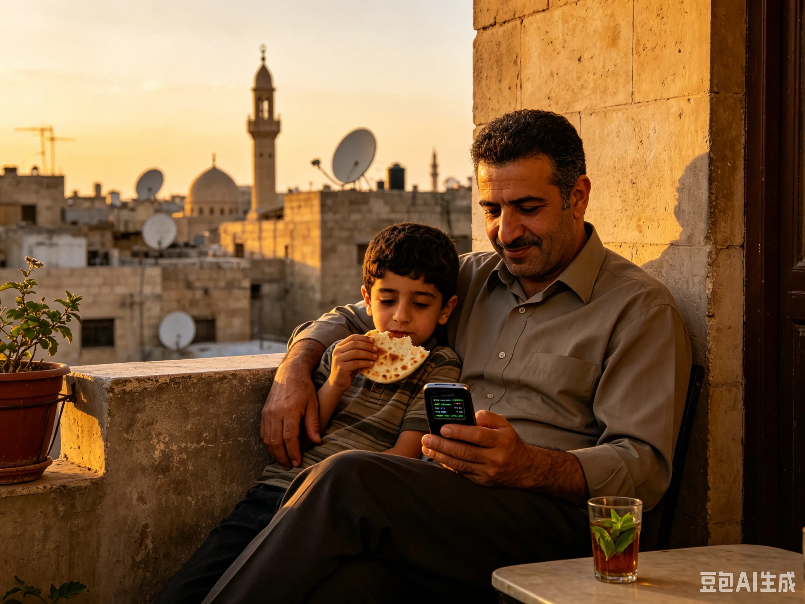
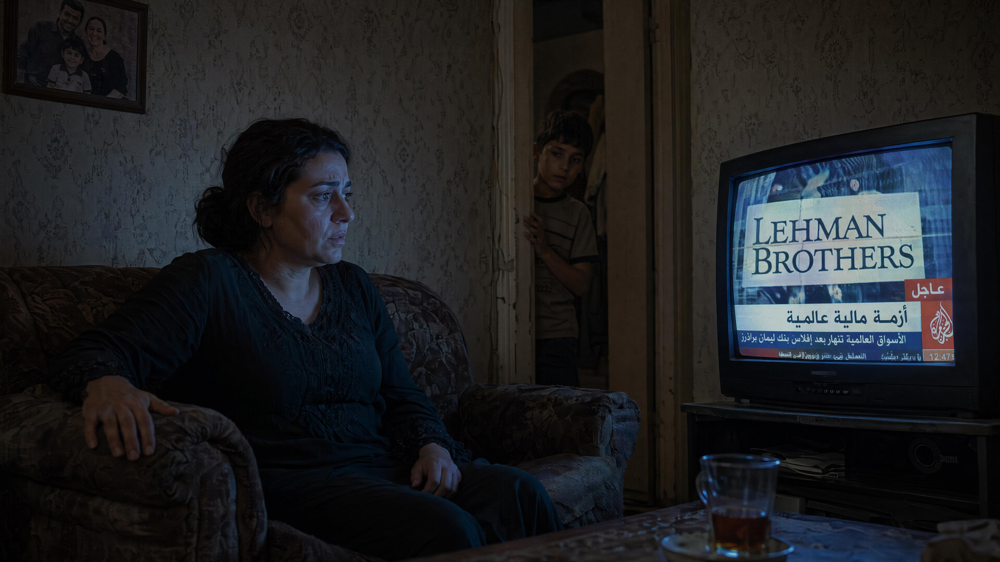
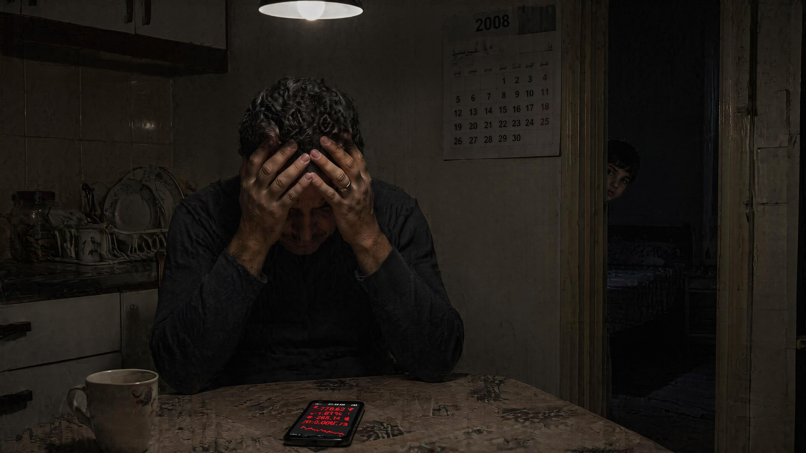
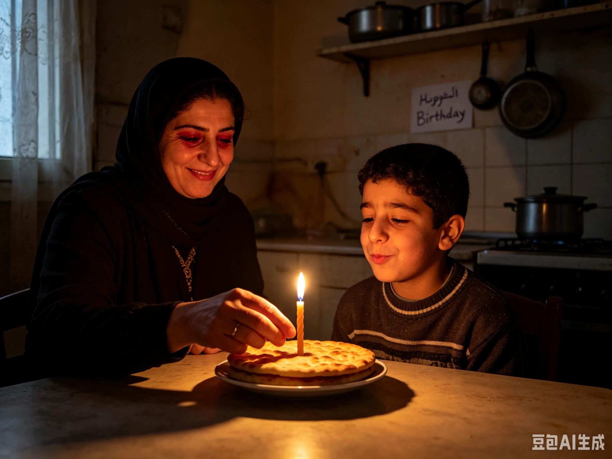
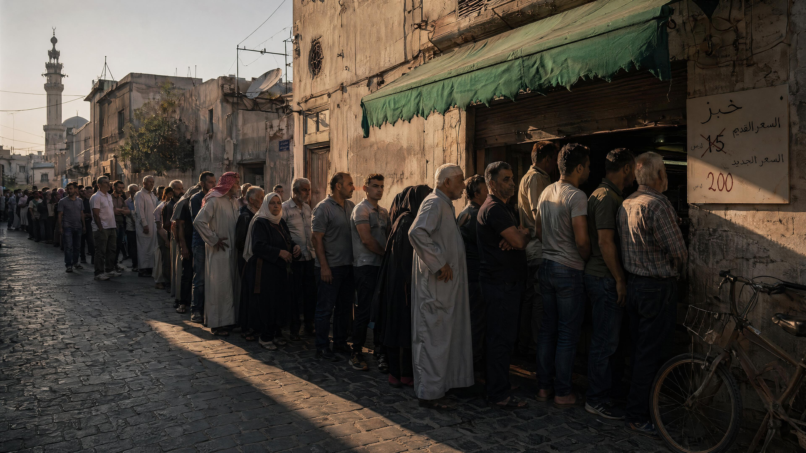
2011 年 3 月，阿明 10 岁。
一天放学，他看到街边围了一群人。有人举着手写的牌子，有人在喊口号。他听不清喊的什么，但看到爸爸从对面快步走过来，一把拉住他的手腕："别看。快走。"
爸爸的手在发抖。
那天晚上，电视上全是抗议的画面。大马士革、霍姆斯、哈马——一个又一个城市的名字。新闻里反复出现一个词："阿拉伯之春"。
阿明问爸爸："什么是阿拉伯之春？"
爸爸关掉电视，说："就是很多人觉得日子过不下去了。"
"因为面包涨价吗？"
爸爸看了他很久。"是，也不全是。"
那把火从突尼斯烧到了埃及，烧到了利比亚，烧到了叙利亚。
2012 年，枪声开始了。
先是远处的，闷闷的，像雷。后来越来越近，像有人在用锤子砸铁皮。学校停了课。阿明每天待在家里，从窗户缝里看外面的街道。偶尔有军车开过，履带碾过路面的声音让整栋楼都在震。
爸爸每天晚上都把收音机贴在耳朵上听。阿明有一次半夜醒来，看到爸爸坐在黑暗的客厅里，收音机的微光照着他的脸。
阿勒颇，战前。
阿勒颇，战后。
2014 年 9 月，ISIS 攻打了阿勒颇附近的城镇。战斗持续了三个星期。
ISIS 的武装分子开着皮卡车、举着枪，在被占领的城市里欢呼。
那天傍晚，两个穿制服的男人来到家里。
"你是法赫德·哈桑？"他们问爸爸的名字。
爸爸站起来。他穿着那件旧衬衫，袖口磨毛了。"是。"
"跟我们走一趟，配合调查。几个小时就回来。"
爸爸走到门口，蹲下来，看着阿明。他的眼睛很红，但声音很平静。
"等我回来，晚上给你讲故事。"
阿明点了点头。
爸爸站起来，跟着那两个人走了。他的拖鞋留在门口。
"等我回来，晚上给你讲故事。"他再也没有回来。
阿明等了一个晚上。然后一天。然后三天。妈妈打了无数个电话，没有人接。
第四天，隔壁的法蒂玛阿姨悄悄来家里，跟妈妈在厨房里说了很久的话。阿明只听到了一句："……不止他一个，隔壁镇上也有人被带走了……ISIS 说他们是'异教徒'……"
妈妈从厨房出来的时候，眼睛是红的，但没有哭。她坐到阿明身边，摸了摸他的头。
"爸爸不会回来了。"
2015 年 5 月，妈妈做了一个决定。
一天晚上，她把家里仅剩的东西塞进一个旧背包——几件衣服、一袋面包、阿明的出生证明、萨拉的出生证明。她把 6 岁的萨拉抱起来，对阿明说："我们要走了。"
"去哪？"
"先到土耳其。然后……想办法去欧洲。"
他们坐上一辆卡车，在夜色里穿过叙利亚北部的荒原。卡车上挤了三十多个人，空气闷热，充满汗味和恐惧。
阿明抱着萨拉，萨拉靠在他怀里睡着了。她的头发有淡淡的洗发水味——妈妈出门前给她洗了最后一次头。
到了土耳其边境，他们换了一辆更小的车。然后步行。穿过一片干涸的河床，阿明的鞋底磨穿了。三天后，他们到了一个海边的小镇。
2015 年 9 月的一个凌晨，天还没亮，阿明和妈妈、妹妹萨拉，还有四十多个陌生人，挤上了一艘橡皮艇。
海是黑的。
萨拉醒了。她紧紧抓着阿明的手。她的手很小，很凉。
"哥哥，我怕。"
"没事，"阿明说，"很快就到了。"
然后浪来了。
先是小浪，船开始摇晃。有人开始呕吐。妈妈把萨拉搂在怀里，用衣服裹住她。
然后一个大浪打过来。船倾斜了。有人尖叫。有人在喊"真主保佑"。
第二个大浪。
船翻了。
阿明掉进水里。他拼命挣扎，手碰到了一块木板。他死死抓住。
"萨拉！"他喊。
黑暗中，他听到了妹妹的声音："哥哥——"
然后是水声。然后是沉默。
天亮了。海面上漂着碎木板和救生衣。他不知道自己在海上漂了多久。
他被土耳其海岸警卫队捞起来。妈妈也在——她活了下来。但她不说话。她坐在角落里，眼睛盯着地面，一整天一整天不说话。阿明给她递水，她接过去，不喝，放在旁边。
2015 年 9 月 2 日。和 3 岁的艾兰·库尔迪一样，阿明的妹妹萨拉，也消失在了那片海里。
2010 年底，全球粮价再次飙升。在突尼斯，一个叫穆罕默德·布瓦吉吉的 26 岁街头小贩，因为被警察没收了谋生的水果推车，点了一把火，烧死了自己。那把火从突尼斯烧到了埃及，烧到了利比亚，烧到了叙利亚。
叙利亚从 1963 年起由复兴党一党执政，阿萨德家族从 1970 年起统治这个国家。安全机构无处不在。到 2010 年，叙利亚最富有的 1% 家庭控制了全国约 75% 的财富。全国 60% 的人口在 30 岁以下，青年失业率超过 20%。
2011 年 3 月，南部城市德拉的几个少年因为在学校墙上写反政府涂鸦被逮捕，遭到酷刑。他们的家人和邻居走上街头要求放人。抗议迅速蔓延全国。
这不是一场"因为面包涨价所以暴动"。这是一个社会的所有出口都被堵死了——当最后一个出口也被堵上，爆炸只是时间问题。
美国：华尔街的贪婪，变成了阿明家的面包涨价。国际资本从新兴市场疯狂撤出，叙利亚股市暴跌。
英国和法国：一百年前画的线，今天还在杀人。1916 年赛克斯-皮科协定，殖民者拿尺子在地图上画线，种下了教派对立的种子。
俄罗斯：为了塔尔图斯军港，把阿勒颇炸成了废墟。莫斯科的一个决策，变成了阿勒颇上空的炸弹。
伊朗：什叶派走廊的守护者。通过叙利亚向黎巴嫩真主党输送武器。
土耳其：最怕叙利亚北部出现库尔德人自治区。多次越境打击库尔德武装。
2015 年，叙利亚 2100 万人口中超过一半流离失所。近 500 万人逃出国门。艾兰·库尔迪不是个案。阿明的妹妹萨拉，是另一个名字。
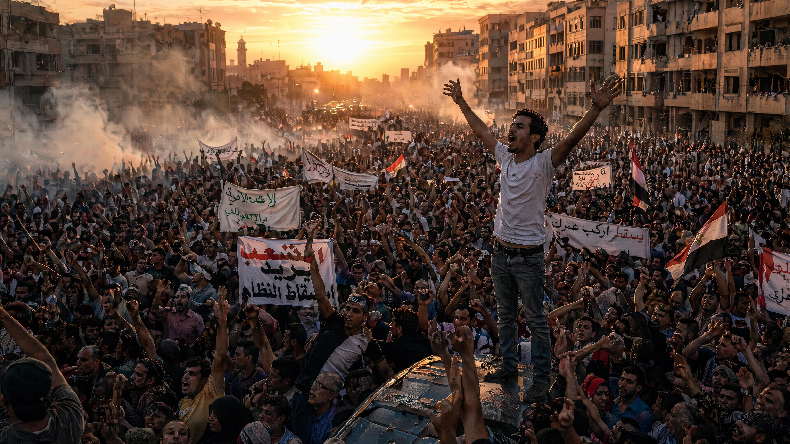
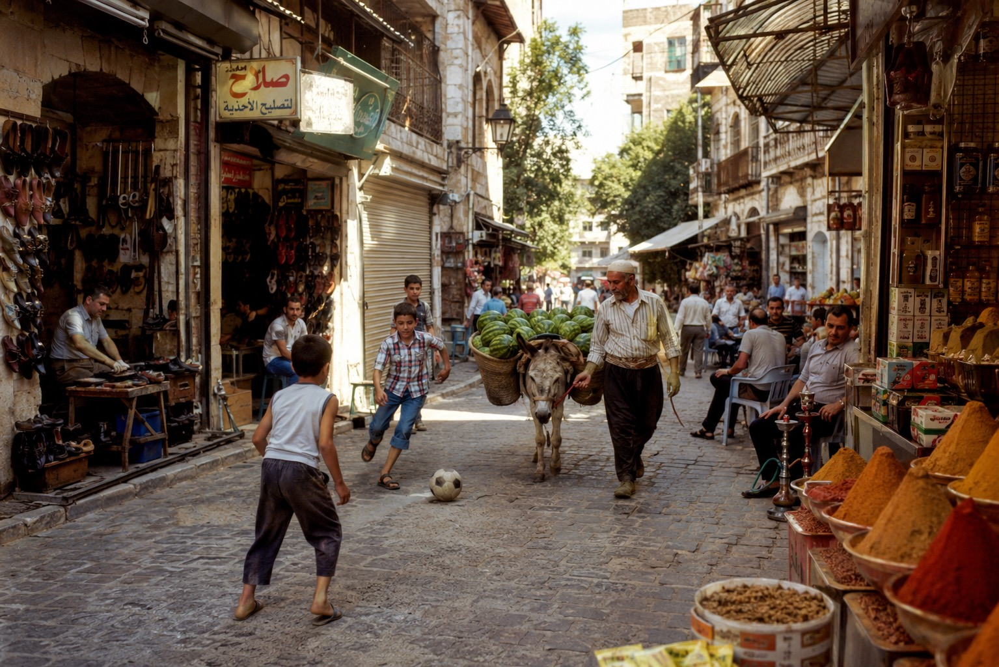
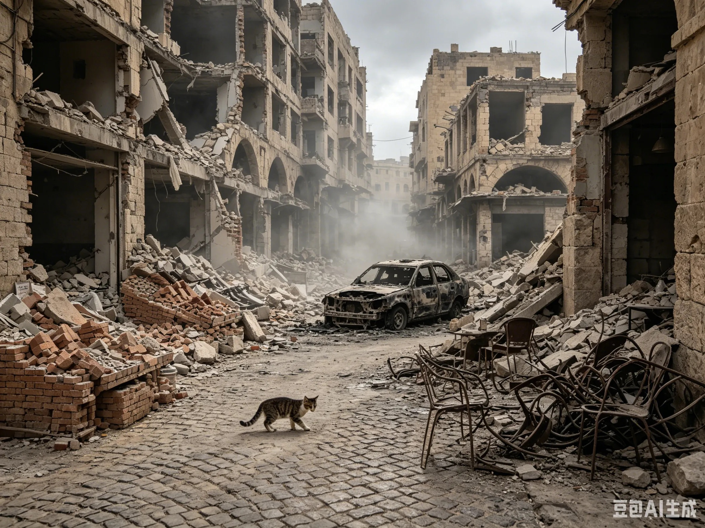
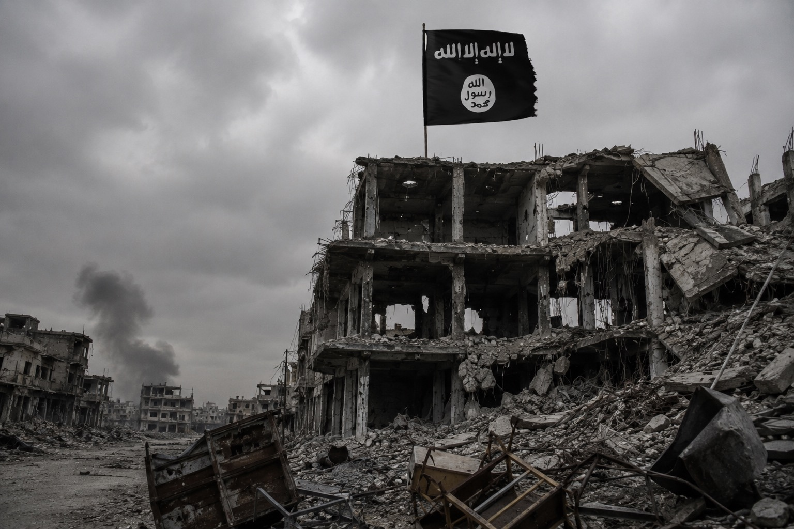
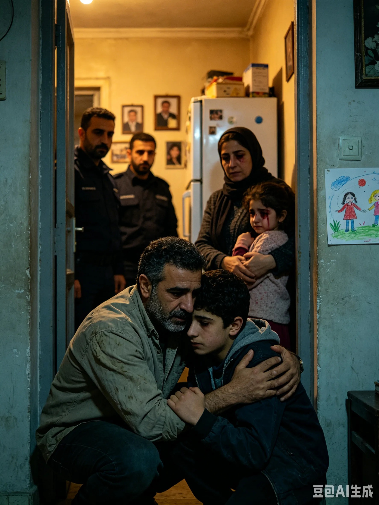
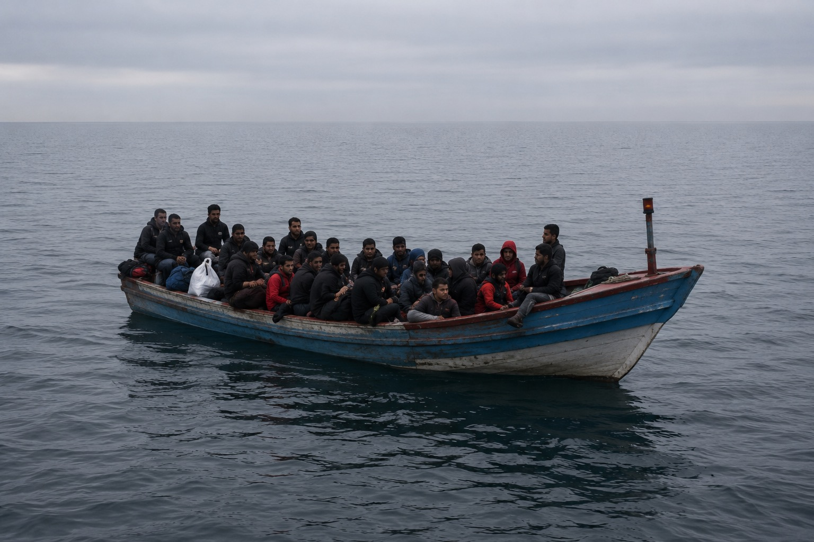
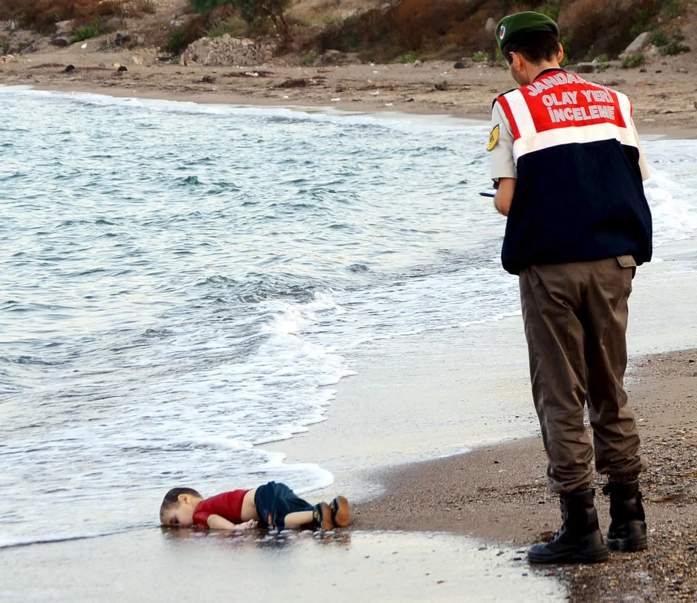
2016 年初，阿明和妈妈到了德国。
他们被分配到柏林郊区的一个难民营。铁皮屋，上下铺，200 个人共用厕所和淋浴间。铁皮屋顶在夏天像烤箱，冬天像冰窖。下雨的时候，水从接缝处渗进来，滴在床上。阿明用饭盒接水，一晚上能接满三盒。
2016 年。柏林郊区的难民营。铁皮屋，200 个人共用厕所。
阿明开始学德语。
他在难民营的社区中心找到了一个免费的德语班，老师是一个退休的中学教师，叫格尔达·穆勒。格尔达 68 岁，满头白发，戴一副圆框眼镜，说话很慢，每个单词都说得很清楚。
格尔达问他："你以后想做什么？"
阿明说："我想当工程师。"
"为什么？"
"因为我想造不会塌的房子。"
格尔达看了他很久，摘下眼镜，擦了擦。"好，"她说，"那我们从数学开始。"
阿明开始在难民营里帮忙做一些翻译工作——他的阿拉伯语和正在进步的德语让他成了营地里的重要人物。有人找医生、有人要填表格、有人跟管理处起了争执，都来找阿明。他发现自己很擅长理解别人的意思——不只是翻译语言，而是翻译处境。
他开始攒钱。营地里有零工机会，搬东西、打扫卫生，一天能赚 10 欧元。他把钱藏在枕头下面的夹层里，想着有一天能去上真正的学校。
日子很苦，但阿明觉得，他在往前走。
然后，2020 年来了。
电视上突然全是同一个画面：穿着白色防护服的人、空荡荡的街道、不断跳动的数字。新闻里说这叫"新型冠状病毒"，COVID-19。
难民营开始封锁。200 个人挤在铁皮屋里，没有人有口罩。
阿明去超市买东西，收银员是一个中年女人，金发，戴着口罩。阿明把东西放在柜台上，她看了他一眼，往后退了一步。
他听到她小声跟同事说："又是难民带进来的。"
路过药店，橱窗上贴着一张纸，打印体，很大：
"COVID-19 疫苗接种仅限德国公民及合法居民预约。"
他站在药店门口看了很久。橱窗玻璃上映出他的脸——20 岁，瘦，胡子没刮，眼睛下面有很深的黑眼圈。玻璃外面是柏林的街道，干净、整齐、安静。玻璃里面是他的倒影，像一个不属于这里的人。
"COVID-19 疫苗接种仅限德国公民及合法居民预约。"
他逃了半个地球。叙利亚的炸弹没有炸死他，地中海的浪没有淹死他。但在这个他以为安全的地方，病毒在蔓延，而他连一个口罩都没有。
他在日记里写了一句话：
"我在叙利亚躲的是炸弹，在德国躲的是病毒。我跑了半个地球，发现哪里都不安全。"
疫情期间的欧洲超市。货架空了，偏见满了。
2020 年底，新冠疫苗开始量产。德国是欧盟的核心成员，第一时间拿到了大量疫苗。但分配方式是按国籍来的——德国公民优先，合法居民其次，难民营里的人不在名单上。
欧盟提前预订了 23 亿剂，人均约 4.6 剂。美国囤了 12 亿剂，够打三遍。而非洲到 2021 年底，接种率不到 10%。
疫苗是按钱分配的，不是按需要分配的。
美国："美国优先"，疫苗先打美国人，剩下的再说。
欧盟：内部先吵，外部先抢。德国被曝出私下绕过欧盟直接跟药厂签合同。
COVAX：理想很丰满，现实很骨感。缺钱、缺产能、缺政治支持。
收银员的"又是难民带进来的"不是个案。当资源紧张的时候，"自己人"和"外人"的界限就会被重新画出来。口罩、疫苗、医疗床位，每一样都是稀缺资源。分配稀缺资源的时候，谁是"自己人"，谁是"外人"，决定了谁能活下来。
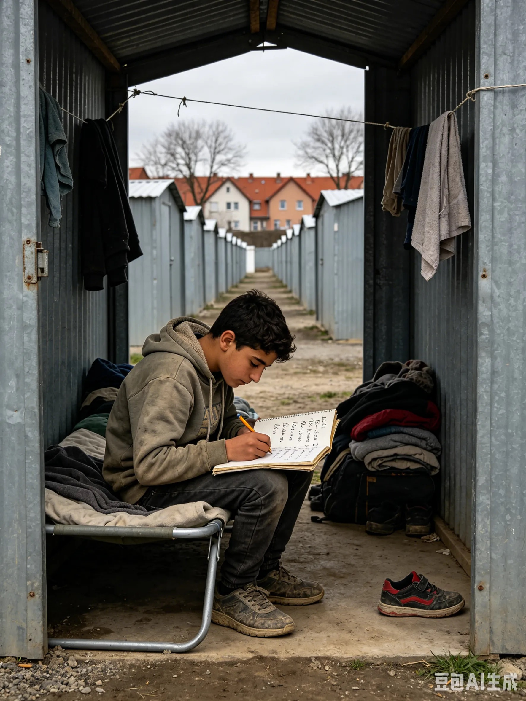
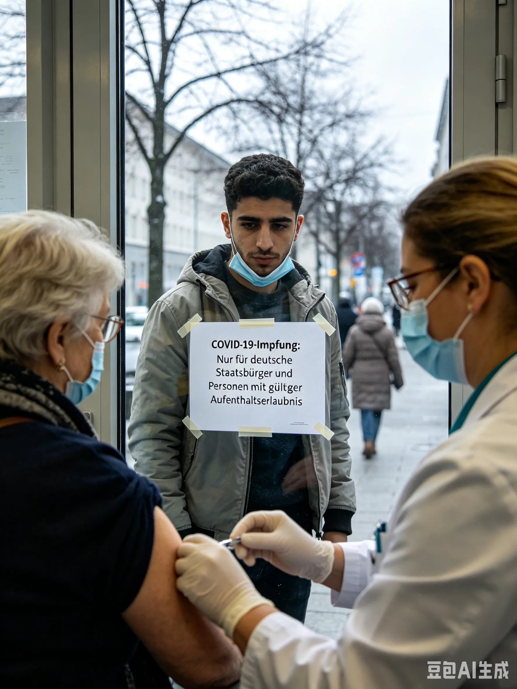
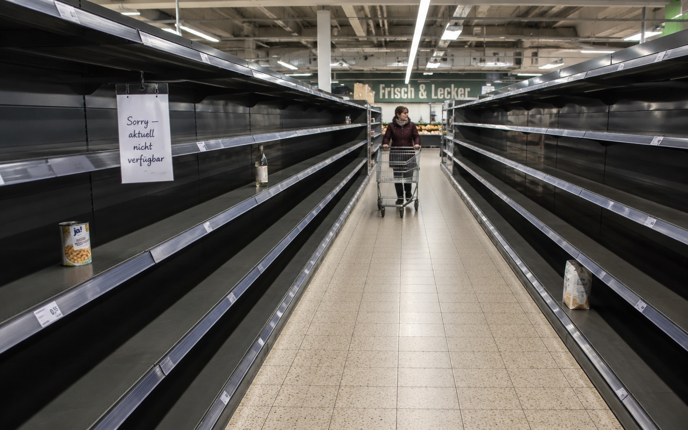
2021 年 3 月，阿明在电视上看到一艘叫"长赐号"的货轮横卡在苏伊士运河里。400 米长，比四个足球场还长。全世界 12% 的海上贸易要从这里过。
一周后，超市的面包又涨价了。方便面涨了。食用油涨了。大米也涨了。
阿明站在货架前，想起 8 岁那年的事。美国的银行倒了，面包涨价了。现在，一艘船卡住了，面包又涨价了。
他想起爸爸的话："全世界的事，为什么让我们买单？"他想起妈妈的话："跟你没关系，去写作业。"他想起格尔达老师的话："你以后想做什么？"他想起自己说的话："我想造不会塌的房子。"
他在日记里写：
"今天面包又涨价了。因为一艘船卡在了一条运河里。
8 岁的时候，面包涨价是因为美国的银行倒了。
14 岁的时候，爸爸不见了是因为一个叫 ISIS 的组织。
15 岁的时候，我差点淹死是因为一场内战。
20 岁的时候，我戴不上口罩是因为一场瘟疫。
21 岁的时候，面包又涨价了，因为一艘船。
每一次，都有一个很大的理由。但对我来说，理由只有一个：面包又涨价了。
我开始明白一件事——这个世界上的每一件事，都连着另一件事。华尔街的银行连着阿勒颇的面包炉。苏伊士运河连着难民营的超市。一个人在突尼斯点了火，火就烧到了我家门口。
没有人是一座孤岛。但我以前不知道。"
连接亚洲和欧洲的最短海上通道。全球 12-13% 的海运贸易从这里过——每天大约 50 艘船，包括全球 30% 的集装箱船和 10% 的原油运输。
300 多艘船在运河两端排队。每小时的延误损失约 4 亿美元。全球油价立刻涨了，集装箱运价飙升，原材料延迟交付，工厂停工，商品短缺，物价上涨。
德国安联保险估计：运河堵塞每周减少全球贸易额最多 100 亿美元。
叙利亚的小麦走黑海→地中海航线，不走苏伊士运河。但全球运力是连通的——"长赐号"堵了，其他航线的运力被挤占，运费上涨，所有粮食的运输成本都跟着涨。
阿明离苏伊士运河 1000 多公里，但全球化让这根链条短到几乎没有距离。
阿明今年 26 岁了。他还在学德语，报了一个远程的工程预科课程，每周三和周六晚上上课。作业很难，他常常做到凌晨。
他还没有当上工程师。但他还在想造不会塌的房子。
他妈妈还在卖布。在柏林的一个土耳其市场里，她找到了一个摊位，卖叙利亚风格的窗帘和桌布。她开始说话了。偶尔会笑。她把摊位旁边的花瓶里插了一枝假花，红色的，是阿勒颇巴扎里那种颜色。
阿明有时候会梦到妹妹。梦里她还是 6 岁，抓着他的手，在海浪里喊"哥哥"。他每次都在梦里抓住她。但每次醒来，手都是空的。
课本说"没有哪一个国家能够独自应对"。这不是一句口号。这是阿明用 26 年的人生告诉你的一件事。
阿明是虚构的。但他的每一段经历——投资清零、爸爸失踪、妹妹溺水、难民营里的歧视——都是真实的。
世界上有上千万个"阿明"。他们不是新闻里的数字，是和你一样有名字、有梦想的人。